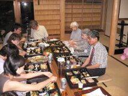

Example Conversations

Even with a familiarity of the vocabulary and grammar of Kansai, it may be hard to understand conversations between speakers of the dialect. To help build towards this goal, we have created twelve conversations based on real conversations--each conversation includes an audio track in Kansai-ben and the text in Kansai-ben, standard Japanese (in translation), and English (in translation). In addition, the grammar and vocabulary from the conversations are explained in detail from the linked pages on individual lines. Use the buttons to toggle between all of these.
The topics of these conversations were chosen to be situations that you could realistically encounter when starting to live or work in Kansai. Since dialect usage is not as common in formal settings like company meetings, most conversations are set in more casual environments. Since the exact dialect spoken can depend on things like the speaker's age, gender, and relationship to each other, the characters in these conversations come from a variety of backgrounds. When you listen to and read the conversations, please note these differences. Below is the current list of example conversations.
After you have gone over some of the features of Kansai-ben from the example conversations, you will be ready to tackle actual Kansai-ben conversations spoken by natives in context. These can be found in the real conversations section.
List of example conversations
| Topic | Description | Characters |
|---|---|---|
| 大家さんと / With the Landlord | Atsushi leaves his apartment for work in the morning and meets his landlord cleaning out front. | Mori Atsushi, The Landlord |
| 歓迎会で / At the Welcome Party | The new man at the company, Mori, is at his welcome party. He is chatting with his boss and new coworker, Kimura. | Mori Atsushi, The Boss, Kimura |
| 街で / In the City | Junko runs into a coworker, Noriko, while on her way to a belly dance lesson... | Junko, Noriko |
| 魚屋で / At a Seafood Stall | Hanako is doing a little shopping at a seafood stall. | Hanako, The Fishmonger |
| 道を聞く / Asking Directions | Atsushi asks directions on the street for the Takashimaya department store in Namba. | Mori Atsushi, The Passerby |
| カラオケで / At Karaoke | Mori, and his coworkers Kimura and Sakagami, go to karaoke on the way home from work... | Mori Atsushi, Kimura, Sakagami |
| 電車で / On a Train | Atsushi is on a train and gives up his seat to an old man... | Mori Atsushi, The Old Man |
| 同じアパートの住人と / With a Neighbor | A neighbor complains to Atsushi. | Mori Atsushi, The Neighbor |
| 会社で / At a Company | Mori has a presentation, but isn't feeling well. His coworker notices that he's pushing himself too hard and probably shouldn't be at work... | Mori Atsushi, Kishimoto, Sugimoto Natsuko, Oshima |
| 会社の昼休み / During Lunch | Junko is chatting with her coworkers, Noriko and Natsuko, during lunch. | Junko, Noriko, Sugimoto Natsuko |
| 居酒屋で / At an Izakaya | Junko and Noriko are drinking and chatting at an izakaya after work. | Junko, Noriko |
| お好み焼き屋で / At an Okonomiyaki Restaurant | Atsushi brings his friend to his usual okonomiyaki (a style of savory pancake) restaurant. | Mori Atsushi, The Friend, The Owner |